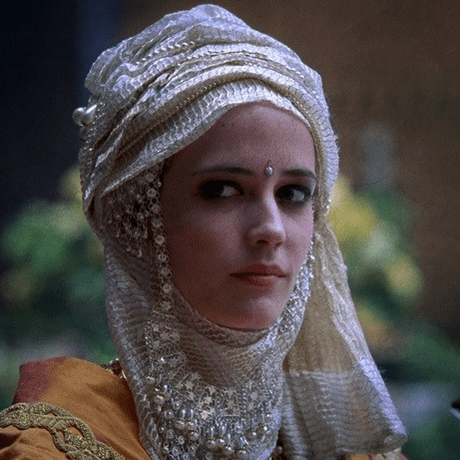
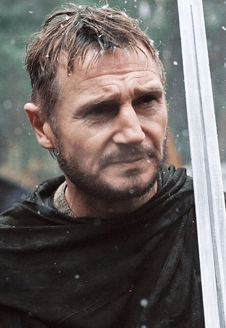

| Photo | Actor/Actress: Character |
|---|---|
Orlando Bloom: Balian de IbelinBalian of Ibelin (French: Balian d'Ibelin; c. 1143–1193), also known as Barisan the Younger, was a crusader noble of the Kingdom of Jerusalem in the 12th century. He was lord of Ibelin from 1170 to 1193. As the leader of the defense of the city during the siege of Jerusalem in 1187, he surrendered Jerusalem to Saladin on 2 October 1187. |
|
|  |
Eva Green: SibyllaSibylla (Old French: Sibyl; c. 1159 – 25 July 1190) was the queen of Jerusalem from 1186 to 1190. She reigned alongside her husband Guy of Lusignan, to whom she was unwaveringly attached despite his unpopularity among the barons of the Kingdom of Jerusalem. Sibylla was the eldest daughter of King Amalric and the only daughter of Agnes of Courtenay. Her father died in 1174, making her heir presumptive to her younger brother, King Baldwin IV. When it became clear that 13-year-old Baldwin had contracted leprosy, the matter of Sibylla's marriage became urgent. The regent, Count Raymond III of Tripoli, arranged for her to marry William Longsword of Montferrat in late 1176, but within a year William died, leaving her pregnant and in possession of the County of Jaffa and Ascalon. |
|  |
Liam Neeson: Godfrey de IbelinBarisan of Ibelin (French: Barisan d'Ibelin; died 1150) was an important figure in the crusader Kingdom of Jerusalem, and was the founder of the Ibelin family. His name was later written as "Balian" and he is sometimes known as Balian the Elder, Barisan the Old or Balian I. Barisan was lord of Ramla from 1138 to 1150. Barisan's origins are obscure. The Ibelins later claimed to be descended from the viscounts of Chartres, but according to Peter W. Edbury, Barisan was probably from northern Italy. According to Jonathan Riley-Smith, however, he may have indeed been connected to Chartres, as the brother of Hugh of Le Puiset, Count of Jaffa; he would then have also been a cousin to the Montlhéry family of King Baldwin II of Jerusalem. |